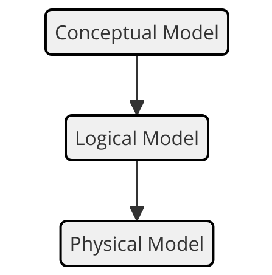
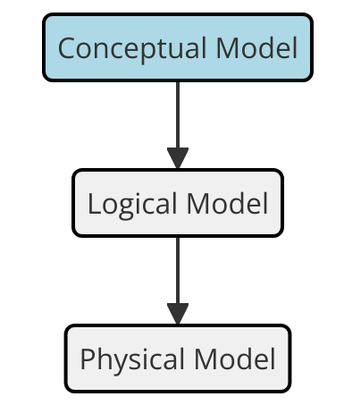
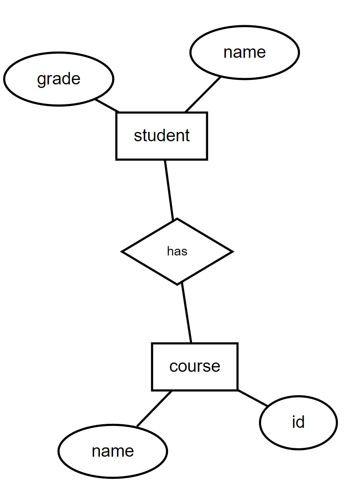
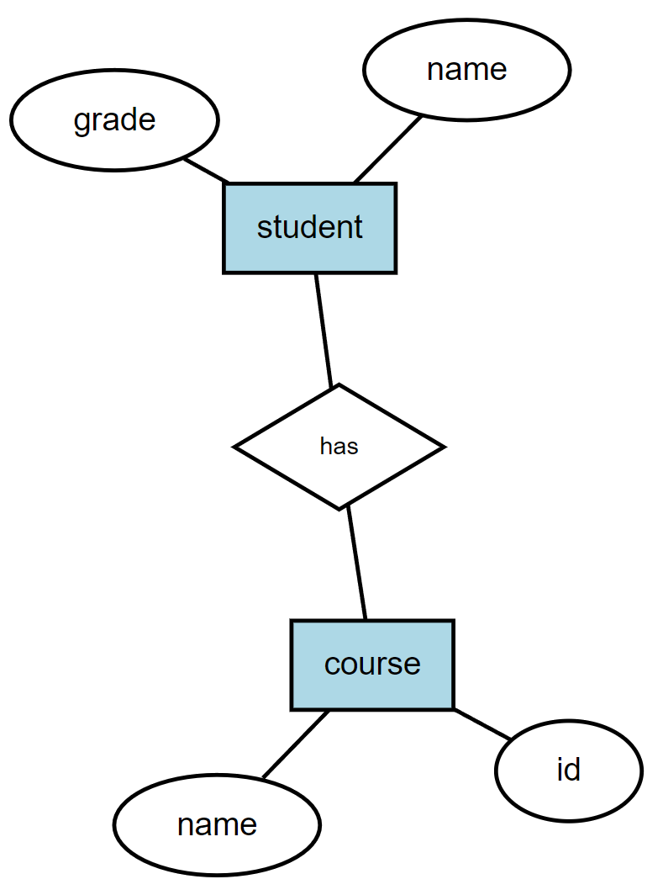
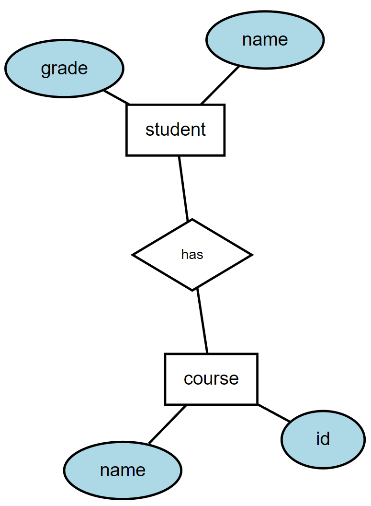
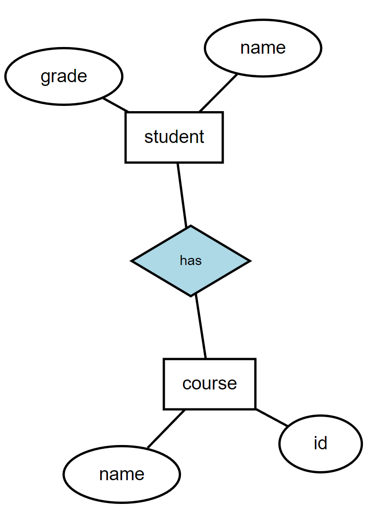

erDiagram
BUILDING ||--|{ ROOM : contains
BUILDING{
string address
string city
string state
}
ROOM {
string room_number
string occupant
}
ER Models
Lecture 4
Thursday - Jan 23, 2025
Housekeeping
Discussion items
Lecture topics
| Module | Week | Date | Day | Notes and Lectures | Activities and due dates |
|---|---|---|---|---|---|
| ER Models | 2 | 1/23 | Thu | L4:ER Models | PQ1:Entity-relation models |
| ER Models | 2 | 1/26 | Sun | HW1:DE Tool Review; Prj2:Team formation; Dis1:ER modeling | |
| ER Models | 3 | 1/28 | Tue | L5:Relational models 1 | |
| ER Models | 3 | 1/30 | Thu | L6:Relational models 2 | Q1:Entity-relation models |
| ER Models | 3 | 2/2 | Sun | Prj3:Ideation | |
| Relational Alg. | 4 | 2/4 | Tue | L7:Relational models 3 | PQ2:Relational Algebra; HW2:Entity Relation Models |
| Relational Alg. | 4 | 2/6 | Thu | L8:Relational Algebra 1 | |
| Relational Alg. | 4 | 2/9 | Sun | Prj4:Video Pitch; Dis2:Relational Alg. |
Intro to ER Models
Conceptual, Logical, and Physical Data Models
- Conceptual Model
- Logical Model
- Physical Model
High-level, abstract model focusing on the entities and relationships. Conceptual models are often created during the initial database design phase.

Conceptual, Logical, and Physical Data Models
- Conceptual Model
- Logical Model
- Physical Model
Translates the conceptual model into a more detailed structure, specifying entities, attributes, and relationships without considering physical storage. Logical models help in the creation of relational schemas.
Conceptual, Logical, and Physical Data Models
- Conceptual Model
- Logical Model
- Physical Model
Focuses on the actual implementation, including tables, columns, and data types. Physical models are usually coded in SQL and include commands for fine tuning, optimization, and storage strategies.
Importance of ER Models in Database Design
Entity-Relationship (ER) models are essential tools for designing databases as they provide a clear structure of data and its relationships. ER models help in organizing data and ensuring that databases are efficient, accurate, and scalable.
- ER models offer a visual representation of the database structure.
- They help in identifying and organizing data requirements.
- ER models reduce the complexity of database design.
- They support the identification of entities, attributes, and relationships.
- ER models guide the transition from conceptual design to logical design.
Understanding ER models is crucial for effective database design and implementation.

Components of Entity-Relationship Models
- Entities
- These represent real-world objects, concepts, or things that have data stored about them. Each entity is depicted as a rectangle in the ER diagram.
- Attributes
- Attributes are properties or characteristics that describe the entities. For example, if you’re modeling a Customer entity, attributes could include CustomerID, Name, Email, etc.
- Relationships
- Relationships illustrate how entities are related to each other. Relationships can be one-to-one, one-to-many, or many-to-many, and they help define how data is interconnected.

Entities in ER Models
Entities represent real-world objects or concepts that are stored in the database. Identifying entities correctly is vital for the success of the database design.
- Entities are things that can be distinctly identified.
- Examples of entities include people, products, events, and locations.
- Entities have attributes that provide details about them.
- Each entity type is represented by a set of instances in the database.
- Entity types are often mapped to tables in the relational model.
Entities form the core of the database, representing key objects or concepts in the system.

Attributes in ER Models
Attributes describe the properties or characteristics of entities and relationships. They are fundamental to defining the structure and constraints of the database.
- Attributes provide specific details about entities, such as name, ID, or age.
- They can be simple (indivisible), composite (consisting of multiple components), or derived (calculated from other attributes).
- Each attribute belongs to a specific domain, which defines the set of possible values.
- Attributes are represented as ovals connected to their respective entities or relationships in ER diagrams.
- Proper attribute selection is crucial for accurate data representation.
Attributes are key to defining the details and constraints of entities and relationships in the database.

Relationships in ER Models
Relationships define how entities interact with each other within the database. Understanding these connections is critical to accurately modeling real-world interactions.
- Relationships represent associations between two or more entities.
- They can be categorized as one-to-one, one-to-many, or many-to-many.
- Relationships have attributes that describe the nature of the association.
- In ER diagrams, relationships are depicted as diamonds connecting entities.
- Properly defining relationships helps in maintaining data integrity.
Relationships ensure that the database reflects the interactions between different entities in the system.

Cardinality in Relationships
Cardinality defines the number of instances of one entity that can be associated with instances of another entity. Accurately determining cardinality is essential for representing real-world relationships in the database.
- Cardinality types include one-to-one, one-to-many, and many-to-many.
- One-to-one: Each instance of one entity relates to a single instance of another entity.
- One-to-many: One entity instance relates to multiple instances of another entity.
- Many-to-many: Multiple instances of one entity relate to multiple instances of another entity.
- Cardinality constraints are depicted in ER diagrams by numerical notation or Crow’s Foot symbols.
Cardinality is critical to ensuring that database relationships accurately reflect real-world scenarios.
Participation in Relationships
Participation indicates whether all or only some instances of an entity are involved in a relationship. Understanding participation is crucial for accurately modeling the mandatory or optional nature of relationships in a database.
- Participation types include total participation and partial participation.
- Total Participation (Mandatory): Every instance of an entity must be involved in a relationship with instances of another entity.
- Partial Participation (Optional): Some instances of an entity may not be involved in a relationship with instances of another entity.
- Participation constraints are often represented in ER diagrams by solid lines (for total participation) or dashed lines (for partial participation).
Participation helps define the essential and optional relationships, ensuring the integrity and accuracy of the database model.
erDiagram
BUILDING ||--|{ ROOM : contains
BUILDING{
string address
string city
string state
}
ROOM {
string room_number
string occupant
}
ER Diagram Notations
ER diagrams use specific notations to represent entities, relationships, and attributes. Understanding these notations is essential for creating and interpreting ER models effectively.
- Chen’s Notation: Uses rectangles for entities, diamonds for relationships, and ovals for attributes.
- Crow’s Foot Notation: Represents relationships with lines and ‘crow’s feet’ to indicate cardinality.
- Entities are often depicted with their primary keys underlined.
- Relationships may include roles and participation constraints.
- Notations help in communicating the structure and details of the ER model.
Mastering ER diagram notations is key to effectively designing and interpreting database models.
Chen notation
graph ER {
fontname="Helvetica,Arial,sans-serif"
fontsize=8; // Reduced font size for the entire graph
node [fontname="Helvetica,Arial,sans-serif", fontsize=8, width=0.5, height=0.3, style=filled, fillcolor=white] // Default: smaller font size, reduced node size, shaded
edge [fontname="Helvetica,Arial,sans-serif", fontsize=8] // Reduced font size for edges
layout=neato
nodesep=2.0; // Increased separation between nodes on the same level
ranksep=1.5; // Increased separation between nodes on different levels
size="6,6"; // Specify desired size in inches
ratio=compress; // Allow Graphviz to compress the layout to fit the size
dpi=60; // Set DPI for higher resolution output
center=false;
node [shape=box,style=filled,color=black,fillcolor=lightblue]; course; student;
node [shape=ellipse,style=filled,color=black,fillcolor=white]; {node [label="name"] name0; name2;}
id; grade;
// Define the "S-C" node with smaller size, white fill color, black border, and label "has"
node [shape=diamond, style=filled, color=black, fillcolor=white width=0.3, height=0.2, fontsize=6, label="has"];
"S-C"
{ rank=same; course; student; } // Place course and student on the same rank
name0 -- course [len=0.7]; // Set edge length between name0 and course
id -- course [len=0.7]; // Set edge length between id and course
student -- grade [len=0.7]; // Set edge length between student and grade
student -- name2 [len=0.7]; // Set edge length between student and name2
student -- "S-C" [len=0.7]; // Set edge length between student and S-C
"S-C" -- course [len=0.7]; // Set edge length between S-C and course
}Crows Foot notation
erDiagram
BUILDING ||--|{ ROOM : contains
BUILDING{
string address
string city
string state
}
ROOM {
string room_number
string occupant
}
Specialization and Generalization in ER Models
Specialization and generalization are advanced ER modeling techniques used to represent inheritance and hierarchy among entities. These techniques enhance the expressiveness of ER models.
- Specialization: Process of defining a set of subclasses from a superclass based on distinguishing attributes.
- Generalization: The reverse process, where multiple subclasses are combined into a single superclass.
- Both techniques help in modeling inheritance and shared characteristics.
- These concepts are depicted in ER diagrams using triangle symbols.
- Proper use of specialization and generalization can simplify complex ER models.
Specialization and generalization are powerful tools for managing complexity in ER models.
Translating ER Models to Relational Schema
The final step in ER modeling is translating the ER model into a relational schema. This process involves mapping entities, relationships, and attributes into tables, columns, and keys.
- Entities are typically mapped to tables, with attributes becoming columns.
- Relationships may result in foreign keys or separate join tables.
- Primary keys ensure each table has a unique identifier for its rows.
- Mapping complex relationships may require additional tables or constraints.
- The translation process ensures that the conceptual design is accurately implemented in the database.
Translating ER models to relational schemas is essential for implementing the database design in a relational database system.
ER Diagramming
Standard Symbols in ER Diagrams
ER diagrams use standard symbols to represent entities, relationships, and attributes, which are key components of database design. Understanding these symbols is essential for accurately modeling data.
- Entities are represented by rectangles, signifying objects or concepts with a distinct existence.
- Attributes are shown as ovals connected to their respective entities, representing properties or characteristics.
- Relationships are depicted by diamonds, connecting entities to indicate how they interact with one another.
- Primary Keys are underlined in the attribute ovals to denote unique identifiers for each entity instance.
- Multi-valued attributes are represented by double ovals, showing that an attribute can have multiple values.
The use of standardized symbols ensures clarity and consistency in ER diagrams.
Chens Notation in ER Diagrams
Chen’s notation is one of the most traditional and widely used methods for creating ER diagrams. It emphasizes the relationships between entities and their attributes.
- Entities are represented by rectangles.
- Attributes are connected to entities by lines and are depicted as ovals.
- Relationships between entities are shown using diamonds.
- Primary Key attributes are underlined to signify their role in uniquely identifying entity instances.
- Weak entities are represented with double rectangles, indicating their dependence on other entities.
Chen’s notation provides a clear and detailed way to represent complex data relationships.
Practice: Creating ER Diagrams with Chens Notation
Hands-on practice with Chen’s notation helps solidify understanding of entities, relationships, and attributes, and how they are visually represented in ER diagrams.
- Identify entities and determine their primary keys.
- Define relationships between entities, noting any cardinality and participation constraints.
- Assign attributes to each entity, considering which are multi-valued or derived.
- Draw the diagram using rectangles for entities, ovals for attributes, and diamonds for relationships.
- Review the diagram for completeness, ensuring all necessary components are included and accurately represented.
Practicing ER diagram creation builds confidence in applying Chen’s notation.
Practice: Chens notation example 1
Online Shopping System
Picture an online shopping platform that needs to manage products, customers, and orders.
Each product has a product ID, name, and price.
Customers have a customer ID, name, and email.
Orders have an order ID, order date, and shipping address.
A customer can place multiple orders, and each order can include multiple products.
Each product can be part of multiple orders over time.
Practice: Chens notation example 2
Car Rental System
Envision a car rental service that wants to manage cars, customers, and rentals.
Each car has a car ID, make, model, and year.
Customers have a customer ID, name, and driver’s license number.
Rentals have a rental ID, start date, and end date.
A customer can rent multiple cars over time, and each car can be rented by multiple customers.
Each rental is associated with one customer and one car.
Crows Foot Notation in ER Diagrams
Crow’s Foot notation is a more modern approach that focuses on simplifying the representation of relationships and cardinality in ER diagrams.
- Entities are shown as rectangles with the entity name inside.
- Attributes are listed inside the entity box, with primary keys at the top.
- Relationships are indicated with lines connecting entities, with crow’s foot symbols denoting cardinality.
- Cardinality symbols at the ends of relationships show the number of instances involved (e.g., one-to-many).
- Optional relationships are represented with a circle at the end of a relationship line.
Crow’s Foot notation is favored for its simplicity and clarity in representing database relationships.
Practice: Creating ER Diagrams with Crows Foot Notation
Creating ER diagrams using Crow’s Foot notation offers an opportunity to simplify and streamline database designs, especially for large or complex systems.
- List entities and their attributes directly within rectangles.
- Determine relationships and represent them with connecting lines and crow’s foot symbols.
- Indicate cardinality for each relationship, ensuring accuracy in one-to-one, one-to-many, or many-to-many relationships.
- Simplify attributes by focusing on primary and foreign keys within the entity boxes.
- Validate the diagram by checking the relationships and cardinality representations for correctness.
Using Crow’s Foot notation can make large-scale ER diagrams more readable and easier to understand.
Practice: Crows Foot Notation example 1
Hospital Patient Management System
Consider a hospital that needs to manage doctors, patients, and appointments.
Each doctor has a doctor ID, name, and specialty.
Patients have a patient ID, name, and date of birth.
Appointments have an appointment ID, appointment date, and time.
A patient can have multiple appointments, and each appointment is with a single doctor. A doctor can see multiple patients over time.
erDiagram
DOCTOR {
string doctorID PK
string name
string specialty
}
PATIENT {
string patientID PK
string name
date dateOfBirth
}
APPOINTMENT {
string appointmentID PK
date appointmentDate
time appointmentTime
string doctorID FK
string patientID FK
}
DOCTOR ||--o{ APPOINTMENT : "has"
PATIENT ||--o{ APPOINTMENT : "books"
Practice: Crows Foot Notation example 2
University Library Borrowing System
Imagine a university library that needs to track books, students, and borrowings.
Each book has a book ID, title, and author.
Students have a student ID, name, and major.
Borrowings have a borrowing ID, borrowing date, and due date.
A student can borrow multiple books, and each book can be borrowed by multiple students over time.
Each borrowing record is associated with one student borrowing one book.
erDiagram
BOOK {
string bookID PK
string title
string author
}
STUDENT {
string studentID PK
string name
string major
}
BORROWING {
string borrowingID PK
date borrowingDate
date dueDate
string bookID FK
string studentID FK
}
BOOK ||--o{ BORROWING : "is borrowed in"
STUDENT ||--o{ BORROWING : "makes"
Differences Between Chens and Crows Foot Notations
Chen’s and Crow’s Foot notations serve similar purposes but differ in their visual representation of ER diagrams. Choosing the right notation depends on the complexity and needs of the database design.
- Chen’s notation emphasizes the detailed depiction of entities, attributes, and relationships.
- Crow’s Foot notation simplifies the representation by focusing on relationships and cardinality.
- Attribute depiction differs: Chen’s uses ovals, while Crow’s Foot lists them within the entity rectangle.
- Cardinality representation is more explicit in Crow’s Foot notation with symbols like crows’ feet, while Chen’s uses numbers or descriptions.
Understanding the differences helps in selecting the appropriate notation for a given project.
Converting ER Diagrams: Chens to Crows Foot Notation
Converting an ER diagram from Chen’s to Crow’s Foot notation demonstrates the flexibility in database modeling and the ability to represent the same information in different ways.
- Identify key components from the Chen’s diagram, including entities, relationships, and attributes.
- Redraw entities as rectangles in Crow’s Foot notation, listing attributes inside.
- Translate relationships by connecting entities with lines, using crow’s feet to denote cardinality.
- Adjust attributes by focusing on primary keys and simplifying the diagram layout.
- Compare the original Chen’s diagram with the new Crow’s Foot diagram to ensure all information is preserved.
Converting between notations enhances understanding of how different diagramming techniques convey the same data.
Choosing the Right Notation for Your Project
Selecting between Chen’s and Crow’s Foot notations depends on the specific needs of your project. Each notation has its strengths and is better suited for different aspects of database design.
- Chen’s notation is ideal for detailed, conceptual models where attributes and relationships need to be explicitly shown.
- Crow’s Foot notation excels in logical designs, particularly where relationships and cardinality are the primary focus.
- Audience understanding: Consider the familiarity of your audience with each notation when presenting your diagrams.
- Tool availability: Some diagramming tools may support one notation better than the other, influencing your choice.
Selecting the appropriate notation enhances both the design process and communication with stakeholders.
Summary of ER Diagram Notations
ER diagram notations like Chen’s and Crow’s Foot offer different ways to visually represent database designs, each with its advantages. Understanding these notations is key to effective database modeling.
- Chen’s notation provides a detailed and traditional approach to ER modeling, ideal for complex systems.
- Crow’s Foot notation simplifies and clarifies relationships, making it better suited for high-level overviews.
- Symbols and notations in each method serve specific purposes in conveying information about entities, attributes, and relationships.
- Practical application involves choosing the right notation based on the project’s complexity and the audience’s familiarity.
- Conversion skills between notations enhance flexibility and understanding in database design.
Mastering ER diagram notations is essential for effective and clear database design.
Weak and Strong Entities
Weak Entities in Database Design
Weak entities are entities that cannot be uniquely identified by their own attributes alone and rely on a relationship with another entity. Understanding how to correctly identify and work with weak entities is crucial for maintaining database integrity.
- Weak entities cannot exist independently and must be associated with a strong entity.
- Examples of weak entities include items like ‘Invoice Line Items’ that depend on an ‘Invoice’ entity.
- A weak entity’s primary key is partially derived from the strong entity to which it is related.
- Weak entities are represented with a double rectangle in ER diagrams.
- Identifying relationships are denoted with a double diamond.
Weak entities depend on strong entities for their identification and existence in the database.
Identifying Weak Entities
Identifying weak entities is essential to ensure proper relational schema design. They are recognized by their dependence on other entities for their unique identification.
- Weak entities have a partial key that is combined with a key from a related strong entity.
- Look for entities where the attribute set alone does not provide uniqueness.
- Consider cases where the existence of an entity depends on another entity.
- Examples include ‘Order Items’ that require an ‘Order’ to exist.
- Weak entities often model scenarios like detailed sub-components of a larger entity.
Recognizing weak entities helps in correctly modeling real-world dependencies in a database.
Relationships Between Weak and Strong Entities
The relationship between a weak entity and its strong entity is crucial for maintaining data integrity and accurately representing real-world scenarios in a database.
- Weak entities are linked to strong entities via identifying relationships.
- The identifying relationship is a one-to-many relationship where the strong entity is on the “one” side.
- The primary key of the strong entity is included in the primary key of the weak entity.
- Identifying relationships ensure that weak entities cannot exist without their related strong entity.
- Represent this relationship with a double diamond in ER diagrams.
Relationships between weak and strong entities ensure dependent data is accurately modeled and constrained.
Weak and Strong Entities - Examples
Consider
Consider a stack of invoices. Each invoice has a primary company address, a customer billing address, and a customer ship-to address. These addresses might be stored in a separate list of addresses for reuse. These addresses are strong entities, that can exist without the invoice.
Each invoice contains a list of items to be purchased. Each item has a item description, quantity, unit price and a total price. Item descriptions may be stored separately and connected to the invoice by an item id.
An item is a strong entity. It can live without an invoice, for example in a table of items to create a product catalog.
Invoice Line Items are entities, too. BUT, they can’t live independently of an invoice. Their data (quantity, total price) are unique to this particular link in the invoice. Thus, these are called weak entities.
Invoice example
{kind=link}
Partial Keys and Their Role
Partial keys, also known as discriminator attributes, are used to distinguish between instances of a weak entity in the context of its related strong entity.
- A partial key is an attribute or a set of attributes that uniquely identify a weak entity for a given strong entity.
- Partial keys are combined with the primary key of the strong entity to create a unique identifier.
- Example: In an ‘Invoice Line Item,’ the line number is a partial key, while the invoice number is the key from the strong entity.
- Partial keys are often underlined with a dotted line in ER diagrams.
- Ensuring accurate definition of partial keys is critical for data integrity.
Partial keys help uniquely identify weak entity instances in the context of their strong entities.
Examples of Weak Entities
Practical examples of weak entities help in understanding their application and importance in database design.
- ‘Employee Dependents’ are weak entities related to an ‘Employee’ strong entity.
- ‘Order Items’ require an associated ‘Order’ entity for their identification.
- ‘Class Enrollments’ are weak entities dependent on a ‘Course’ entity.
- ‘Apartment Units’ or ‘Rooms’ might depend on a ‘Building’ entity for their unique identification.
Real-world examples illustrate how weak entities are essential in various relational models.
Symbolism and Notation in ER Diagrams
ER diagrams use specific symbols and notations to represent weak entities and their relationships with strong entities, ensuring clarity in design.
- Weak entities are symbolized by a double rectangle.
- Identifying relationships between weak and strong entities are shown with a double diamond.
- The partial key within a weak entity is often represented with a dotted underline.
- Strong entities are depicted with a single rectangle.
- The combination of symbols visually reinforces the dependency of weak entities.
Understanding these symbols and notations is key to correctly interpreting and designing ER diagrams.
Importance of Identifying Relationships
Identifying relationships are fundamental in ensuring that weak entities are properly linked to their corresponding strong entities, maintaining database consistency.
- Identifying relationships ensure that weak entities are not independent.
- These relationships enforce referential integrity by requiring a link to a strong entity.
- The identifying relationship is critical in scenarios where data naturally depends on other data.
- Example: An ‘Order Item’ cannot exist without its corresponding ‘Order.’
- Properly defined identifying relationships prevent orphaned records in a database.
Identifying relationships are essential for maintaining the integrity and meaning of weak entities.
Common Mistakes with Weak Entities
Avoiding common pitfalls in modeling weak entities ensures the accuracy and integrity of the database design.
- Mistake: Treating weak entities as strong entities, leading to incorrect database schemas.
- Mistake: Failing to define identifying relationships, causing weak entities to lack context.
- Mistake: Incorrectly assigning partial keys, leading to non-unique or ambiguous identifiers.
- Mistake: Not using the appropriate symbols and notation in ER diagrams.
- Mistake: Over-complicating the model by incorrectly identifying weak entities.
Avoiding these common mistakes ensures that weak entities are accurately and effectively modeled.
Best Practices for Modeling Weak Entities
Applying best practices in modeling weak entities leads to more accurate and effective database designs.
- Always confirm that weak entities cannot be uniquely identified by their attributes alone.
- Ensure that each weak entity is connected to a strong entity through an identifying relationship.
- Use appropriate symbols and notation to clearly represent weak entities in ER diagrams.
- Define partial keys carefully to ensure uniqueness within the context of the strong entity.
- Regularly review the model for consistency and alignment with real-world scenarios.
Best practices guide the effective modeling of weak entities, ensuring database integrity.
Housekeeping
Discussion items
Lecture topics
| Module | Week | Date | Day | Notes and Lectures | Activities and due dates |
|---|---|---|---|---|---|
| ER Models | 2 | 1/23 | Thu | L4:ER Models | PQ1:Entity-relation models |
| ER Models | 2 | 1/26 | Sun | HW1:DE Tool Review; Prj2:Team formation; Dis1:ER modeling | |
| ER Models | 3 | 1/28 | Tue | L5:Relational models 1 | |
| ER Models | 3 | 1/30 | Thu | L6:Relational models 2 | Q1:Entity-relation models |
| ER Models | 3 | 2/2 | Sun | Prj3:Ideation | |
| Relational Alg. | 4 | 2/4 | Tue | L7:Relational models 3 | PQ2:Relational Algebra; HW2:Entity Relation Models |
| Relational Alg. | 4 | 2/6 | Thu | L8:Relational Algebra 1 | |
| Relational Alg. | 4 | 2/9 | Sun | Prj4:Video Pitch; Dis2:Relational Alg. |
CMSC 408 - Databases